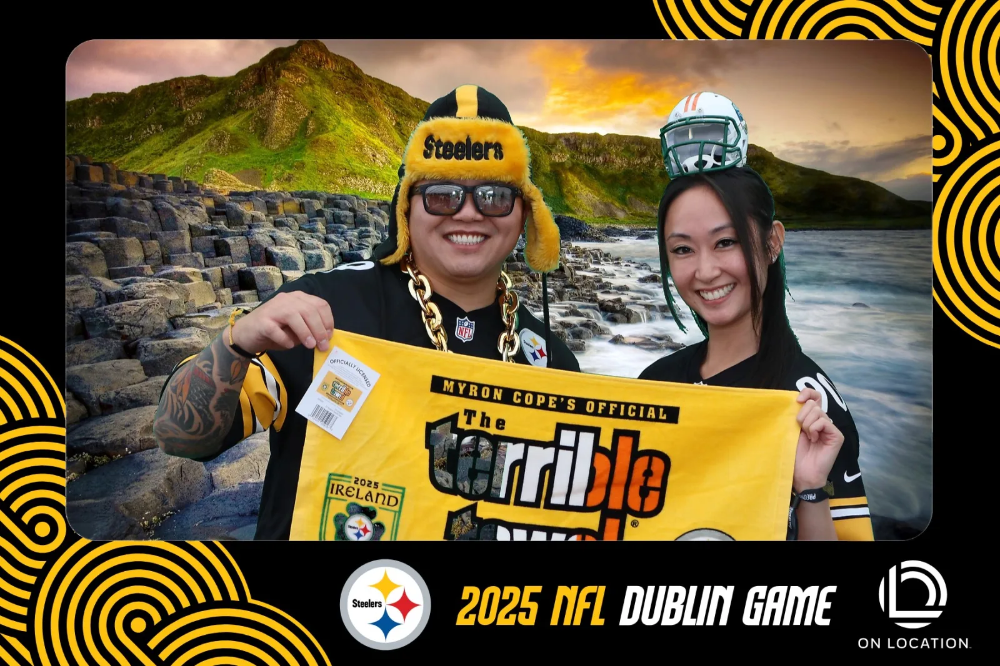
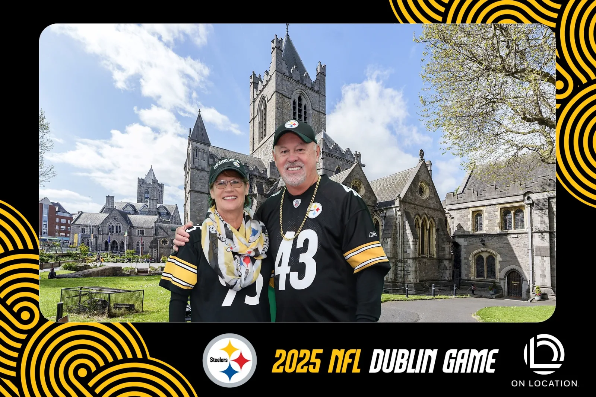

Transport your guests anywhere with BoothLedger's green screen photo booth software. Use traditional chroma key or let AI remove backgrounds automatically — no green screen required. Custom backgrounds, real-time preview, and Canon DSLR support built in.
A green screen photo booth replaces the backdrop behind your guests with any image you choose. Guests step in front of a solid green backdrop, the software removes the green colour, and a custom background takes its place — from tropical beaches to branded corporate scenes to fantasy worlds.
Guests pose in front of a green backdrop (or any backdrop when using AI mode). A Canon DSLR or webcam captures the photo at full resolution.
BoothLedger removes the backdrop using chroma key (green screen) or AI-powered subject detection. The result is a clean cutout of your guests.
Your guests appear in front of any custom background — branded scenes, exotic locations, themed environments. The final photo is printed or shared instantly.
Custom backgrounds, themed events, branded backdrops — from real BoothLedger green screen setups.


BoothLedger gives you two ways to replace backgrounds: traditional green screen chroma key and AI-powered background removal. Use whichever works best for your event — or combine them.
No green screen needed. BoothLedger's AI automatically detects subjects and removes the background from any photo. Works in any venue, with any backdrop, in any lighting conditions.
Prefer the classic approach? BoothLedger includes full chroma key support. Use a green or blue backdrop and the software handles precise colour-based removal for clean, consistent results.
Load any image as a background. Tropical beaches, city skylines, branded corporate scenes, themed party environments — your creativity is the only limit. Guests can even choose their own background.
Guests see themselves on the chosen background in real time before the photo is taken. The live preview builds excitement and helps guests pose perfectly for the shot.
Capture photos with Canon DSLR and mirrorless cameras for the sharpest, highest-quality green screen results. Full tethered shooting with live view and remote trigger support.
Guests share their green screen photos via SMS, email, or QR code seconds after capture. Photos sync to BoothLedger Cloud automatically for online galleries and downloads.
BoothLedger includes both methods. Here's how they compare so you can choose the right approach for each event.
BoothLedger includes both methods — switch between green screen and AI removal at any time.
Whether you use a physical green screen or AI background removal, these tips will help you get the best results at every event.
For green screen: light the backdrop evenly with two softbox lights to eliminate shadows and hotspots. Light your subjects separately from the front. For AI mode: standard event lighting works fine.
Use a wrinkle-free, matte green fabric or paper backdrop. Iron or steam out creases before the event. Position the backdrop wide enough to cover your camera's field of view with some margin.
Place guests 3–4 feet (1–1.2 metres) in front of the green screen. This separation prevents green spill (reflected green light) on subjects and produces cleaner edges.
Use a Canon DSLR for the sharpest results. Shoot at f/5.6–f/8 to keep both subjects and backdrop in focus. Use ISO 100–400 and a shutter speed of 1/125s or faster to avoid motion blur.
Download BoothLedger and get full access to green screen and AI background removal for 30 days. No credit card, no commitment.
A green screen photo booth uses a solid green (or blue) backdrop behind subjects. The software removes the green colour and replaces it with any background image you choose. BoothLedger supports both traditional chroma key and AI-powered background removal that works without any physical backdrop.
No. BoothLedger's AI background removal detects subjects automatically and removes the background without a green screen. This works in any venue with any backdrop. You can still use a traditional green screen if you prefer — BoothLedger supports both methods.
AI background removal is more convenient — no backdrop setup, no lighting constraints, and no issues with guests wearing green. Traditional green screen produces excellent edges in controlled studio environments but requires more equipment. BoothLedger includes both so you can choose per event.
BoothLedger supports Canon DSLR and mirrorless cameras for the highest quality results. Webcams are also supported for simpler setups. Canon cameras give you the best image quality for clean background separation.
Use a wrinkle-free green backdrop, light it evenly with two softbox lights, position subjects 3–4 feet in front of the screen, and use separate front lighting for subjects. Or skip the green screen entirely and use BoothLedger's AI background removal — just point the camera and go.
BoothLedger's Photobooth plan starts at €20/month and includes green screen chroma key. The AI Photobooth plan at €35/month adds AI background removal plus all other AI effects. Both plans include a free 30-day trial with no credit card required.
Yes. BoothLedger lets you configure a selection of backgrounds that guests can browse and choose from on the touchscreen before their photo is taken. You can also set a single background for all photos at an event.
Yes. BoothLedger's AI detects multiple subjects in a single photo and removes the background behind all of them. It works well with groups of up to 6–8 people in a standard photo booth frame.